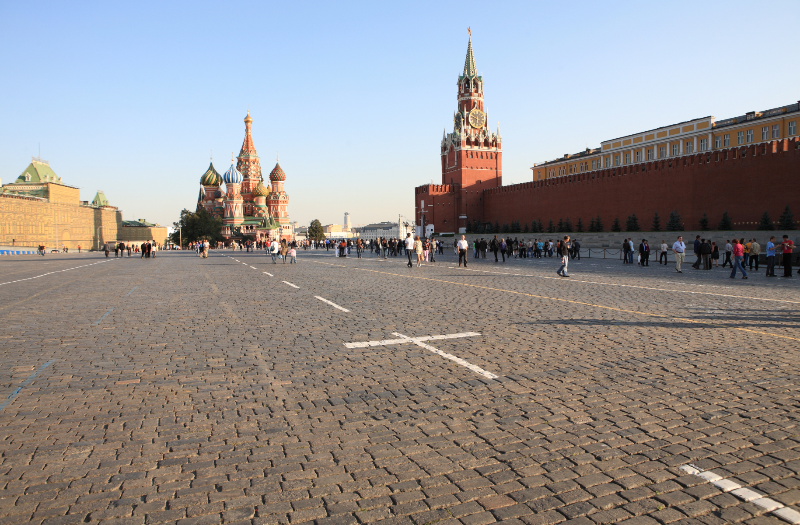
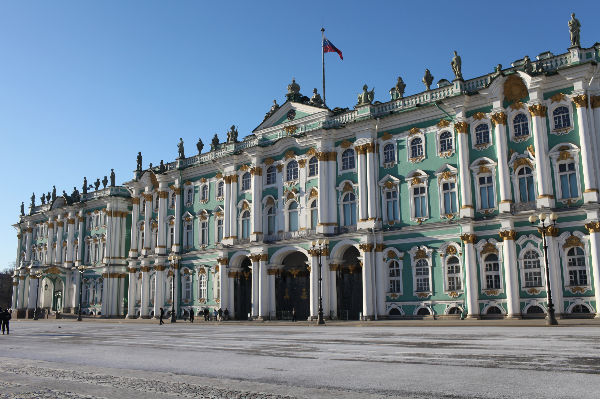

Конструкции урока:
| ID | Construction | Illustration |
|---|---|---|
| 2273 | в-NumOrd-ых, XP/Cl | Во-первых, я бы хотел поблагодарить своего тренера. |
| 2353 | С одной стороны, XP/Cl. С другой (стороны), XP/Cl | С одной стороны, мои знания были глубокими, с другой стороны, односторонними. |
| 365 | что касается NP-Gen, то Cl | Что касается спорта, то я никогда не любил бегать. |
| 1093 | в целом Cl | В целом кино достойно просмотра. |
| 1839 | таким образом, Cl | Таким образом, наша команда за год добилась важных результатов. |
XP = phrase (фраза)
Cl = clause, sentence (предложение)
NP = noun phrase (существительное)
Gen = Genitive case (генитив)
Русский конструктикон содержит информацию обо всех конструкциях урока
https://constructicon.github.io/russian/
а.
Чтобы поехать в Россию, вам нужно получить визу. Для этого необходимы, во-первых,
деньги, во-вторых, время, а в-третьих, терпение*. С одной стороны, оформлять
документы очень скучно, с другой стороны, это необходимо. Что касается времени, то
визу надо делать заранее, как минимум за месяц до поездки. В целом визу сделать
несложно!
*терпение — English: patience; Norwegian: tålmodighet
б.
Программа обмена доступна* многим студентам. Для неё вам необходимо подготовить
небольшой пакет документов. Во-первых, вам нужна копия паспорта. Во-вторых, справка
о знании английского языка. В-третьих, рекомендательное письмо от одного
преподавателя. Кроме того, вам надо написать короткое эссе. С одной стороны, это очень
легко сделать. С другой стороны, только 10% студентов решают попробовать.
*доступна — English: available; Norwegian: tilgjengelig
в.
Привет, Мартин! Спасибо тебе за приглашение в Норвегию на Пасху! Я очень хочу поехать,
но боюсь, что не успею собрать документы. Во-первых, у меня нет загранпаспорта. С
одной стороны, его очень просто сделать, а с другой стороны, это может занять* три
месяца. Что касается других справок и сертификатов, то в целом, их выдают быстро.
Таким образом, когда я получу загранпаспорт, мне можно будет подавать документы на
визу. Как бы то ни было, я надеюсь, что всё сделаю вовремя и приеду в Норвегию! Твоя
подруга Саша.
*занять — English: it takes (about time); Norwegian: det kan ta (om tid)
а. Что нужно, чтобы поехать в Россию?
б. Почему вы хотите поехать в Россию?
в. У имени Александр есть много вариантов.
Добрый день! Вы записаны в визовый центр на 12:00.
Список документов, которые вам нужно иметь с собой…
| 1. В Москве зимой очень красиво 2. Путешествовать интересно 3. Есть много сладкого вредно 4. Учить русский язык сложно 5. Смотреть сериалы весело |
а. сладкое — это очень вкусно б. это прокрастинация в. там холодно г. очень интересно д. для путешествий нужно много времени и денег |
Образец:
Отель мне ещё нужно забронировать. Билеты я купил уже давно.
-> Отель мне ещё нужно забронировать. Что касается билетов, то я купил их уже давно.
Образец:
| Кто? | Что делал? |
| Леонид | выспался сходил на море сходил на футбольный матч |
Леонид выспался, сходил на море и на футбольный матч. В целом день прошёл хорошо.
| Кто? | Что делал? |
| Евгения | отдохнула сходила в спа посмотрела фильм |
| Кто? | Что делал? |
| Наташа и Андрей | потеряли ключи от квартиры опоздали на поезд замёрзли на прогулке |
| Кто? | Что делал? |
| Дима | приготовил вкусный ужин посмотрел новый фильм купил новый диван |
| 1. Для поездки за границу нужно сделать
загранпаспорт, получить визу, купить билеты и
спланировать маршрут. 2. В Санкт-Петербурге много музеев, парков, дворцов и храмов. За день их все не посмотреть. 3. Чтобы сделать визу в Норвегию, нужно много времени и денег, а у русских мало и того, и другого. 4. Я потеряла паспорт, а Соня не смогла улететь домой, потому что её рейс отменили. |
а. Туда лучше ехать на
несколько дней. б. Мы вместе остались на каникулы в общежитии. в. Готовиться к путешествию нужно заранее. г. В Норвегию русские туристы приезжают нечасто. |
| Куда? | На сколько? | Зачем? | Когда? | |
| а. | Сочи | 1 неделя | Кататься на лыжах | Январь |
| б. | Москва | 2 недели | Шопинг | Август |
| в. | Санкт-Петербург | 10 дней | Гулять по городу | Октябрь |
| г. | Калининград | 5 дней | В гости к другу | Март |
Список вещей:
|  1. Красная площадь в Москве |
2. Царь-колокол в Москве |
3. Исаакиевский собор в Санкт-Петербурге |
 4. Зимний дворец в Санкт-Петербурге |
Факты:
а. Раньше это была резиденция российского императора, а сейчас в этом здании
находится музей «Государственный Эрмитаж».
б. Этот огромный колокол весит 202 тонны и был поврежден во время большого пожара в
Москве в 1737 году.
в. Это главная площадь Москвы, которая расположена рядом с Московским Кремлём на
берегу Москвы-реки.
г. Это самый крупный православный храм Санкт-Петербурга, который сейчас является
музеем и одним из символов города.